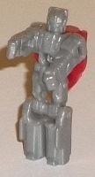
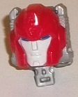
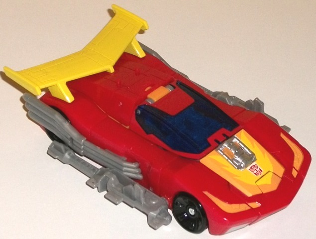
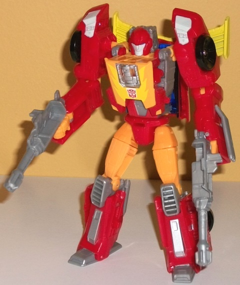

Allegiances
: Autobot
Size
: Deluxe
Difficulty of Transformation
: Medium
Color Scheme
: Moderately dark red,
light orange, and some moderately light milky gray, black, dark blue, transparent
dark blue, silver, light glossy bluish gray, and light sunny yellow
Rating
: 9.2


Firedrive is Hot Rod's
Titan Master, but it's based off his G1 Targetmaster's robot mode (given
that Hot Rod never had a Headmaster form in G1). The mold detailing on
the arms and legs is fairly generic "-Masters" detailing, with square legs
with little feet and fists molded into the inside of the arm pieces., He's
got two little rectangular details on the sides of his chest and waist,
as well as some basic details on the center of the body to help differentiate
Firedrive at least a little from the other Titan Masters. His head is a
fairly faithful rec-reation as well, with a visor across his eyes with
a little indentation for the nose and a normal mouth. He's got a square
helmet, though this is mostly because of the fact that he has to fit into
his Titan Master head port-- Firedrive's original head design was like
this, but round. Unfortunately Firedrive's ENTIRE mode here is a moderately
light milky gray. Thus it's pretty boring-looking, with no paint apps to
pick out all these details. (Really, Hasbro, not even some visor paint?)
For articulation, Firedrive can move at the head, shoulders, hips, and
knees (with the latter two moving as one for both legs, given that they're
pinned or molded together). In head mode, that's certainly Hot Rod's noggin.
The mold details are replicated very faithfully here, with a round helmet,
circular bulbous "ears", and a glossy gray face with some dark blue eyes.
Unfortunately his head crest isn't painted, making the head look a little
plainer than it should be, though on a head for a deluxe-sized figure I
suppose this isn't that big of an issue. The bigger issue is all the gray
on the back two-thirds of this mode, which also breaks out of the top of
Hot Rod's round head shape because of the required square shape of the
Titan Master arms and legs.


Hot Rod's vehicle mode
is the usual-- a fairly futuristic... er, um... hot rod, with a large angular
yellow spoiler on the back and exposed tailpipes on the sides. Compared
to other G1-ish Hot Rod toys, this one is a bit more curvy and less angular--
you've got the light orange and yellow flame details on the front hood
and headlights that are a bit angular, as well as the aforementioned spoiler,
but otherwise things are pretty smooth and aerodynamic on this one. Part
of this is no doubt due to the fact that this version has to house a Titan
Master inside the cockpit, and because of this the windows are a bit higher
but not as wide as is traditional on G1 Hot Rod, so he's got larger "side
bumpers". This mode is pretty darned smooth overall, with NO robot extras
whatsoever-- not even inside the cockpit, given that there's a hole there
for Firedrive to sit in. The color scheme is the usual Hot Rod moderately
dark red, with yellow and light orange highlights. The yellow is a bit
sunny, but under indoor lighting it looks a bit... well.. sickly, so I'm
not a huge fan of that color, though it's only used prominently on the
spoiler. The windows for his cockpit are a nice transparent dark blue which
contrasts against the red quite well, and for a "neutral" color he's got
a milky gray on the tailpipes and exhaust vents on the back (yes, he does
have a back end with no obvious robot parts back there-- though there's
no paint back there, either). The milky gray is a bit duller than usual,
so I don't mind it as much, especially when it's not a main color. Of course
the tires are black, but that's about it as far as that color. For weapons
Hot Rod has two gray guns which, like many Titans Return weapons, can combine
into one larger gun in which a Titan Master can sit. They can be pegged/stored
on the sides of this mode, which makes them look like oversized additional
exhaust pipes-- they can make the mode look a bit clunky, but I still appreciate
the storage peg holes. Hot Rod has two pegs on the top rear of his mode
for Titan Masters to stand on, right in front of the spoiler.
Hot Rod's transformation
isn't too far off from the norm as far as the top/front half-- fold the
hood down and fold it up a little, the sides become the arms, the spoiler
folds up on the back, then plug the head in the right spot. The legs are
nicely flattened out and folded up, though, and require a few more twists/turns
and flips than you'd expect. The end result is a pretty good robot mode,
with only a few minor proportional issues around the chest/shoulders. The
shoulders poke a bit too high up compared to the top of the chest, and
the chest could stand to be a little wider since it's basically the same
width as the waist. There's also some minor cockpit kibble on his back,
but this is pretty much required for his trademark spoiler to be behind
there and it doesn't get in the way of articulation, so I don't mind it.
Similarly, the rear tire sections are behind the lower legs, which do look
a little odd but help bulk out the lower legs too, so that's a small issue
as well. The mold detailing is a bit more prevalent here than the almost
non-existent mold detailing in vehicle mode (due to the "streamlined feel"
of said sportscar), with a few minor vents, pipes, and the like molded
into his arms and lower legs. There's some silver paint on the lower legs
and some bluish gray on the shoulders (which matches the face), but otherwise
there's no new paint apps for the robot mode. Of course, the awesome fiery
details and exposed engine on the chest goes a long way to making him look
great, along with the light orange on the upper legs, chest, and on some
small sections of his arms. For articulation in this mode, Hot Rod can
move at the neck, shoulders (at two points), elbows (at two points), inwards
at the elbows, rotation at the waist, and movement at the hips (at two
points), knees, and SLIGHTLY back-and-forth movement at the ankle. Given
the combination of this and the fact that he's quite well-balanced, he
can get into a lot of great poses. His hip ball joints can be a bit loose
and might require a touch of floor/nail polish, though.
Titans Return Hot Rod
is an excellent toy in both modes, with only some minor kibble and proportional
issues in robot mode. His vehicle mode's nearly perfect, he's got great
articulation, and all you'd expect from a Hot Rod toy-- complete with flames
and an exposed engine on the chest. My only issue is that there's plenty
of other good Hot Rod toys, too, so this feels like a bit of a waste of
a good "Headmaster toy" spot-- I'd only recommend this one if you can't
find another one for a decent price or just particularly want one with
a Head/Titan Master (though Firedrive himself is super-bland).
Reviews by Beastbot